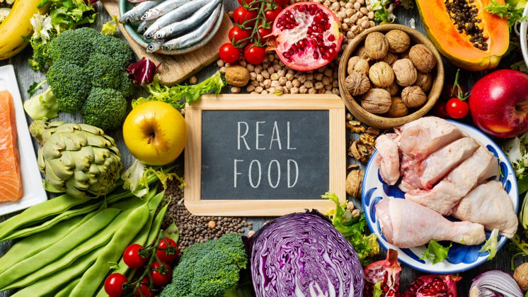

Projetos em Ciência de Dados

Painel Gerencial com Streamlit
Desenvolvimento de um painel interativo para apoio à tomada de decisão, utilizando Python, Pandas e Streamlit.
Ver ProjetoEnsaio de Machine Learning
Avaliação de algoritmos de regressão e classificação com foco em overfitting e ajuste de hiperparâmetros.
Ver ProjetoAnálise de Dados de Vendas
Análise exploratória de dados para identificação de padrões e oportunidades de negócio.
Ver ProjetoPrevisão de Demanda
Modelo de séries temporais para previsão de demanda e apoio ao planejamento estratégico.
Ver Projeto
Clusterização de Clientes
Segmentação de clientes usando algoritmos de clusterização para análise de comportamento.
Ver Projeto
Sistema de Recomendação
Sistema de recomendação baseado em filtragem colaborativa e por conteúdo.
Ver Projeto
Análise de Sentimentos
NLP aplicado à análise de sentimentos em textos de redes sociais.
Ver Projeto
Detecção de Fraudes
Modelo de classificação para identificação de transações fraudulentas.
Ver Projeto